Photographs Of Mountains You Would Never Wanna Miss!!
1)
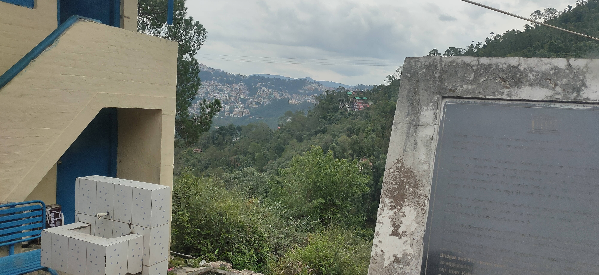
Mountains, with their majestic presence and towering peaks, captivate the imagination. They stand as testaments to the Earth's raw power and endurance, formed over countless years through geological forces. These colossal natural wonders are not only awe-inspiring but also harbor unique ecosystems teeming with life. From the lush vegetation that clings to their slopes to the elusive animals that call them home, mountains are havens of biodiversity. Scaling their heights, adventurers are rewarded with breathtaking vistas that stretch as far as the eye can see, stirring a profound sense of wonder and connection to the world around us. Mountains, with their grandeur and untamed beauty, beckon us to explore, to discover, and to appreciate the magnificence of our planet's diverse landscapes.
2)
Mountains command our attention with their majestic allure, rising proudly and casting an imposing presence against the horizon. Their lofty peaks reach towards the heavens, instilling a sense of wonder and insignificance in the face of their grandeur. Mountains are nature's playground, beckoning adventurers to explore their rugged terrain and conquer their formidable heights. As we ascend, the air grows crisp, and the scenery transforms before our eyes. The landscape unfolds, revealing a breathtaking panorama of jagged cliffs, verdant valleys, and cascading waterfalls that seem to defy gravity. Mountains possess a profound wisdom, silently reminding us of the vastness and power of the natural world, and our humble place within it. In every season, from snow-capped peaks to vibrant autumnal hues, mountains display an ever-changing beauty that captivates the senses and ignites a sense of reverence for the boundless wonders of our planet.
3)
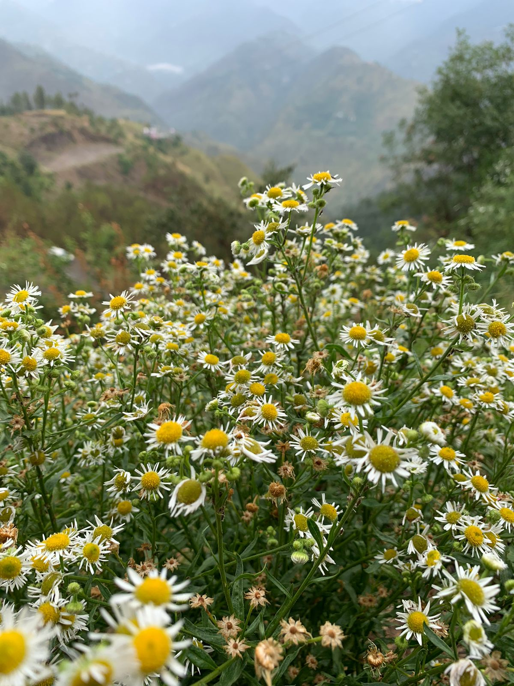
Nestled among the Earth's vast landscapes, mountains stand as majestic sentinels of nature's grandeur. Their rugged slopes and towering peaks evoke a sense of awe, drawing us closer to the beauty and mystery they hold. Mountains possess a serene and timeless presence, offering a respite from the chaos of daily life. As we venture into their embrace, we are greeted by a symphony of sights and sounds—an orchestra of whispering pines, cascading rivers, and distant echoes of wildlife. Standing atop their summits, we become part of something greater, immersed in breathtaking vistas that stretch to the horizon, reminding us of the insignificance of our worries in the face of the vastness of the world. Mountains, with their silent strength and unyielding beauty, remind us to seek solace in nature and embrace the untamed spirit within ourselves.
4)
Among nature's magnificent wonders, mountains reign supreme with their awe-inspiring presence. Their towering peaks and rugged slopes command attention, inviting us to explore their vast landscapes. In the embrace of mountains, we find refuge from the chaos of everyday life, surrounded by a sense of tranquility and timelessness. As we venture deeper into their realms, we are treated to a symphony of natural marvels—gentle breezes rustling through alpine meadows, the melody of cascading waterfalls, and the sight of sunlight painting vibrant hues across rocky cliffs. Standing atop their summits, we are humbled by the boundless vistas that unfold before our eyes, reminding us of the infinite possibilities that lie beyond our daily routines. Mountains, with their majestic allure and serene majesty, offer us a profound connection to the natural world and a gateway to inner exploration and introspection.
5)
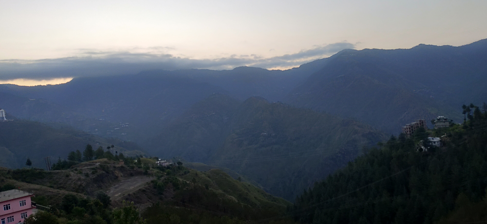
Majestic and formidable, mountains command reverence as they reach towards the heavens. Their peaks, veiled in mist and crowned with snow, inspire a sense of awe and wonder. In the presence of mountains, time slows down, and we find solace in their unwavering strength and timeless beauty. Exploring their rugged terrain is an invitation to discover hidden valleys, glistening lakes, and ancient forests, each step revealing a new facet of their enchanting character. Standing atop their summits, we are embraced by panoramic vistas that stretch beyond the horizon, reminding us of the vastness of the world and our place within it. Mountains are not just geographical features but gateways to adventure, self-discovery, and a profound connection with nature's magnificence.
6)
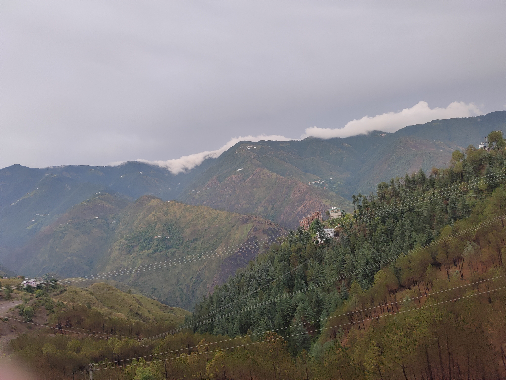
Rising proudly amidst the landscape, mountains stand as majestic guardians of nature's splendor. Their majestic peaks, cloaked in mist or glistening with snow, command our attention and spark a sense of reverence. In the presence of mountains, time seems to slow, allowing us to immerse ourselves in their rugged beauty and find solace in their ancient wisdom. Exploring their untamed terrain is an invitation to embark on a journey of discovery, where hidden valleys, meandering trails, and pristine alpine lakes await. From the moment we set foot on their slopes to the exhilaration of reaching their summits, mountains offer an unparalleled sense of adventure and accomplishment. Standing at the pinnacle, we are rewarded with breathtaking vistas that stretch far and wide, reminding us of the vastness and diversity of our world. Mountains inspire us to embrace our adventurous spirit, appreciate the magnificence of nature, and find peace in the serenity of their towering presence.
7)
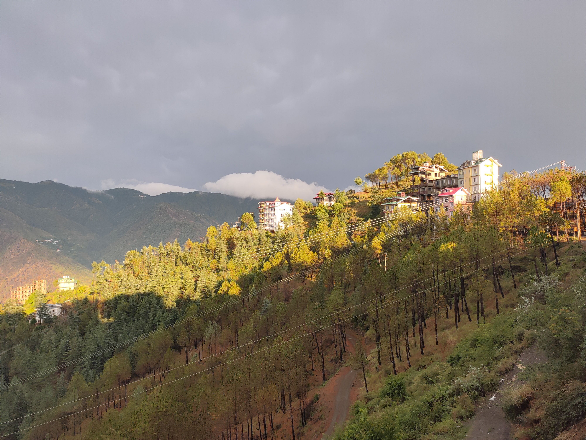
Silent and steadfast, mountains rise as guardians of the land, their ancient presence etched into the very fabric of the Earth. With rugged slopes and snow-capped peaks, they epitomize a beauty that is both raw and sublime. Mountains possess a remarkable duality—they exude a sense of serene tranquility while also harboring an untamed, awe-inspiring power. As we venture into their domain, we become witness to nature's resilience and grandeur. From the gentle rustle of wind through alpine meadows to the thunderous roar of cascading waterfalls, the mountains awaken our senses and stir our souls. Standing atop their summits, surrounded by a vast expanse of peaks and valleys, we gain a newfound perspective—a reminder of our place in the vast tapestry of the universe. Mountains, with their towering heights and enduring spirit, call upon us to embrace both the stillness and the wildness that reside within ourselves.
8)
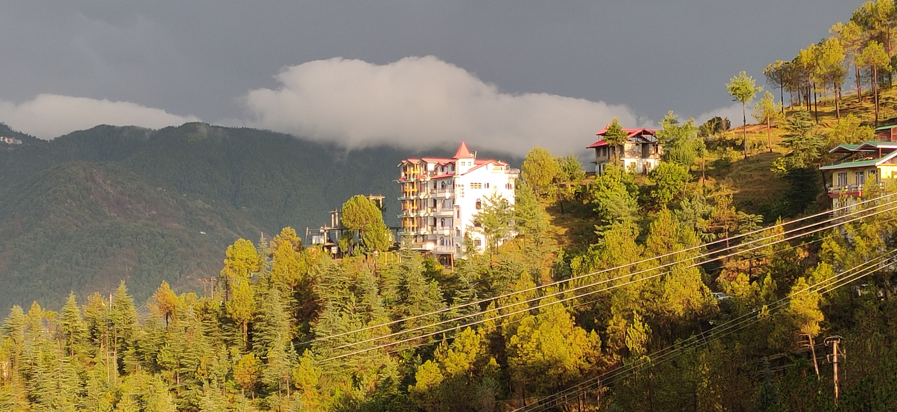
Majestic and awe-inspiring, mountains command our attention with their timeless beauty. Their grand peaks, piercing the sky, create an enchanting backdrop against the horizon. In the presence of mountains, a profound sense of wonder and tranquility engulfs us, transporting us to a realm untouched by time. Exploring their vast expanses, we traverse through winding trails, ancient forests, and cascading waterfalls, unveiling nature's hidden treasures along the way. As we ascend their slopes, the air grows crisper, and the panoramic views that greet us from their summits take our breath away. Mountains serve as gateways to adventure, urging us to embrace challenges, push our limits, and discover the strength within ourselves. From sunrise to sunset, mountains change their hues, casting mesmerizing shadows and painting the skies with vibrant colors, creating a canvas that captivates our senses. In the embrace of mountains, we find solace, inspiration, and a deep connection to the majesty of the natural world
9)
Mountains impart profound teachings that resonate within us. Firstly, they teach us the value of perseverance, as their formidable slopes remind us to persist and overcome obstacles in our own lives. Secondly, mountains inspire humility, reminding us of our smallness in the face of their vastness, instilling a sense of respect for the greater forces at play. They also teach us about inner strength, encouraging us to tap into our resilience and find solace within ourselves, just as mountains stand tall against the elements. Mountains further teach us adaptability, as their ever-changing landscapes remind us to embrace change and adjust to new circumstances with grace and flexibility. Lastly, mountains impart a sense of awe and interconnectedness, inviting us to reconnect with nature, appreciate its beauty, and recognize our place as part of a greater ecosystem. Through their teachings, mountains offer guidance on resilience, humility, strength, adaptability, and connection to the world around us.
10)
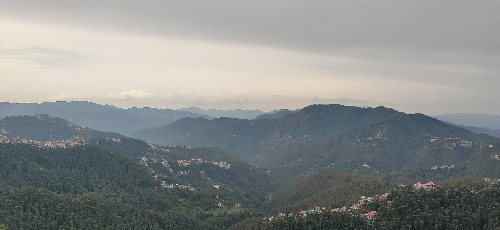
Mountains hold within them profound teachings that resonate with our lives. Firstly, they teach us patience, as the formation of mountains takes millions of years, reminding us that great things often require time and perseverance. Secondly, mountains teach us the importance of balance, as their towering peaks are rooted in deep foundations, emphasizing the need for stability and harmony in our own lives. They also teach us about resilience, as mountains endure harsh weather conditions and yet remain steadfast, inspiring us to bounce back from setbacks and challenges. Mountains further teach us about perspective, as ascending their heights provides a broader view of the world, reminding us to see beyond our immediate concerns and embrace a more expansive outlook. Lastly, mountains instill a sense of wonder and awe, inviting us to marvel at the beauty of nature and cultivate a deep appreciation for the majesty of the world we inhabit. Through their teachings, mountains offer guidance on patience, balance, resilience, perspective, and wonder.
11)
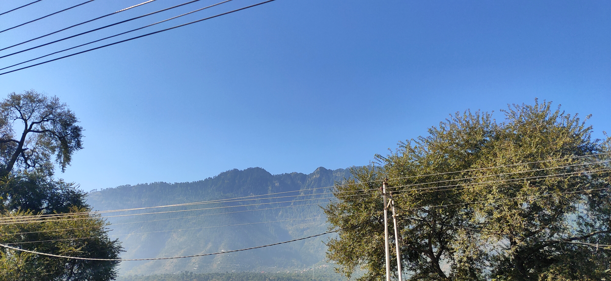
Mountains offer a serene haven that transcends the chaos of everyday life. Standing tall and majestic, their peaks kiss the heavens, while their valleys cradle tranquility. In the embrace of these mighty giants, one can escape the noise and find solace in nature's symphony. The crisp mountain air breathes a sense of calm, filling the lungs with purity and rejuvenating the spirit. Surrounded by breathtaking vistas and untouched beauty, the mountains whisper tales of serenity, inviting us to find inner peace amidst their awe-inspiring grandeur.
12)
The beauty of Indian mountains is an enchanting tapestry woven with diverse landscapes and captivating vistas. From the mighty peaks of the Himalayas to the lush valleys of the Western Ghats, each range holds a unique charm. Majestic snow-capped summits pierce the azure skies, while cascading waterfalls adorn verdant slopes, creating a visual spectacle. Mist-laden valleys, adorned with vibrant flora and fauna, invite explorers into their embrace. As the sun paints the horizon with hues of gold, the mountains of India unveil a breathtaking panorama, leaving all who witness their beauty spellbound.
13)
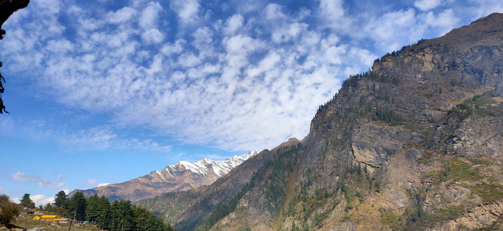
The environment in mountains is a delicate ecosystem that harbors a wealth of natural treasures. Pristine rivers and streams cascade down rocky slopes, nourishing the surrounding flora and fauna. Dense forests blanket the slopes, providing shelter to a diverse range of species, both plant and animal. The crisp mountain air carries the aroma of pine and wildflowers, invigorating all who breathe it. The altitude and unique climate give rise to rare and endemic species that thrive in these challenging conditions. Amidst this untouched wilderness, the mountains serve as guardians of biodiversity, reminding us of the importance of preserving and respecting our natural environment.
14)
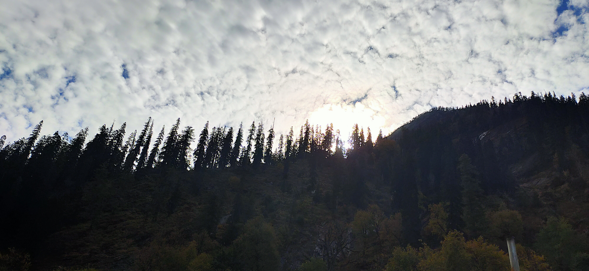
Mountains embody a profound symbolism that extends beyond their physical presence. They represent resilience and strength, standing tall against the test of time. Mountains evoke a sense of grandeur and awe, reminding us of the vastness and beauty of the world. They serve as a metaphor for challenges and obstacles in life, urging us to persevere and conquer our fears. Mountains also offer a sanctuary for introspection and reflection, inviting us to seek clarity and find our inner balance. Ultimately, mountains symbolize the indomitable spirit of nature and inspire us to embrace our own journey with courage and determination.
15)
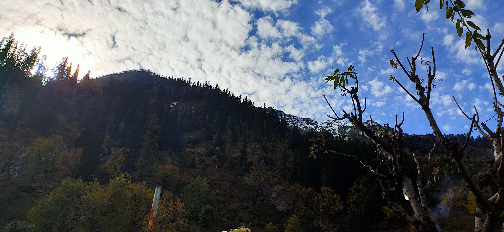
Indian mountains hold a significant place in the country's rich cultural and geographical tapestry. The Himalayas, stretching across northern India, are revered as the abode of gods and hold deep spiritual importance. They are home to diverse ecosystems, from snow-clad peaks to lush valleys, harboring unique flora and fauna. These majestic ranges have shaped India's history, culture, and even its climate, providing awe-inspiring landscapes that inspire wanderlust. Indian mountains stand as a testament to the country's natural beauty, offering captivating vistas and adventure-filled experiences for all who venture into their embrace.
16)

India's mountains boast a remarkable diversity that encompasses a multitude of landscapes and ecosystems. From the towering peaks of the Himalayas in the north to the rolling hills of the Western Ghats in the south, each range showcases its unique character. The Himalayas exhibit a stunning contrast, with snow-capped summits, deep gorges, and glaciers coexisting alongside picturesque meadows and tranquil lakes. The Western Ghats, on the other hand, are adorned with verdant forests, cascading waterfalls, and abundant wildlife. In the northeastern region, the Eastern Himalayas captivate with their dense forests, rare orchids, and vibrant tribal cultures. This incredible diversity of Indian mountains showcases the country's ecological richness and offers a myriad of experiences for nature enthusiasts and explorers alike.
17)
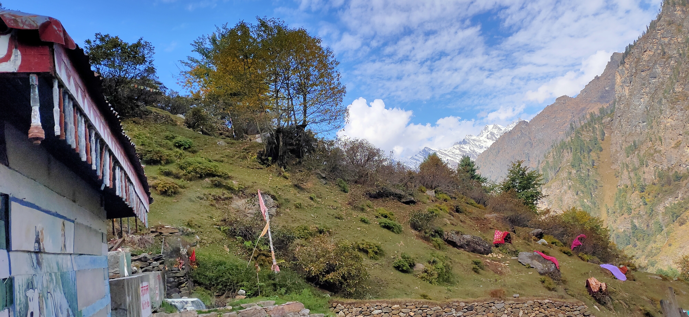
Visiting mountains offers numerous health benefits, both physical and mental. The fresh mountain air is rich in oxygen, improving respiratory health and boosting overall lung function. The lower levels of air pollution in mountainous regions contribute to better cardiovascular health and improved immune system functioning. The physical activities associated with mountain exploration, such as hiking or skiing, provide excellent opportunities for exercise, promoting fitness and weight management. The serene and peaceful environment of mountains also helps reduce stress, anxiety, and depression, fostering mental well-being. Finally, exposure to natural sunlight in the mountains stimulates the production of vitamin D, essential for bone health and immune system regulation.